|
个人简介 | 详细介绍 | 黑白风格界面 | 工业风格界面 | 备用 |
下面界面风格类似于黑白风格----
下面软件是960KVA的断路器温升试验软件。
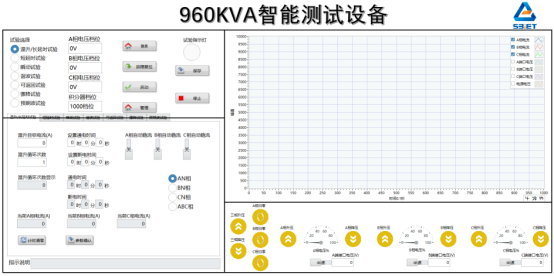
下面软件是断路器在220V电压下点寿面试验软件。
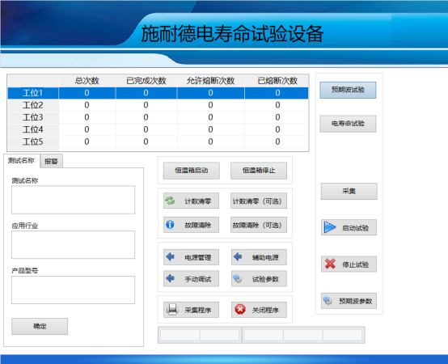
下面软件是接触器可靠性试验，通过给线圈频繁供电，来判断主触点和辅助触点的接通情况是否符合要求。
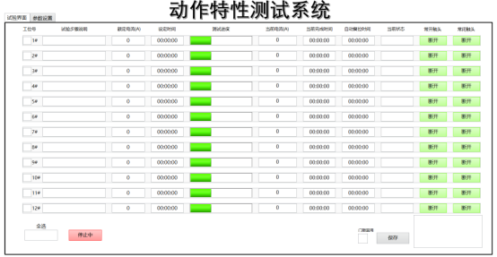
下面软件是交直流接触器动作特性测试可以分别测试交流接触器和直流接触器。
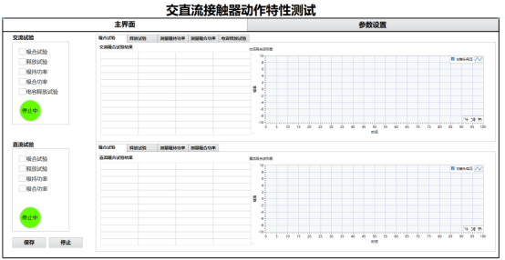
下面软件是用于温升试验历史数据产看界面。
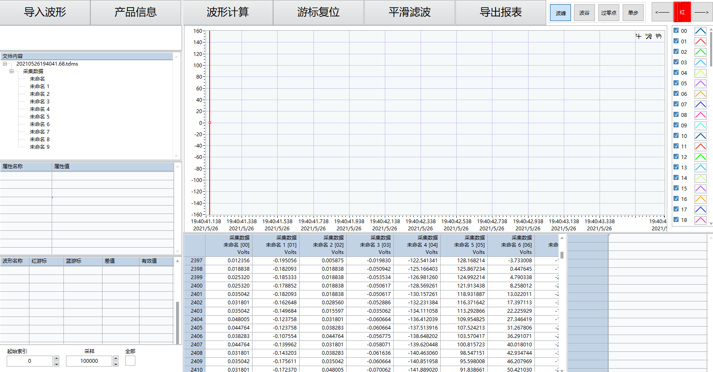
下面软件是高压固态断路器试验，通过采集的波形来判断产品是否合格，由于电压很高最高达到 4500V，因此波形时间很短并且有杂波需要拟合之后再分析。
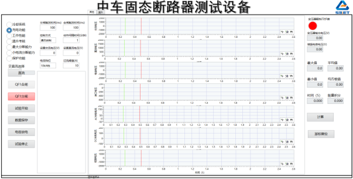
下面软件是老化试验测试，因此需要软件连续不间断运行7天才可以测试完成。
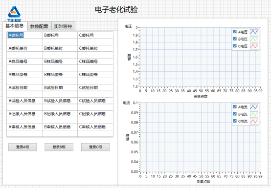
下面软件是接触器完整的测试，可以测试主触头、辅助触头的接触电阻，以及线圈电阻、线圈通电波形、 合分闸时间，还有可靠性试验检测。
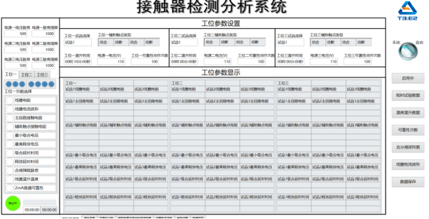
下面软件也是可靠性试验检测，但是是在温湿度箱中进行，测试在不同湿度、温度下产品性能。
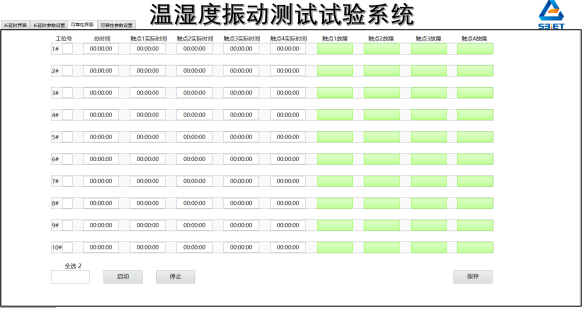
下面软件是24工位延时试验检测，其中是六个大工位，大工位之间相互独立互不干扰。
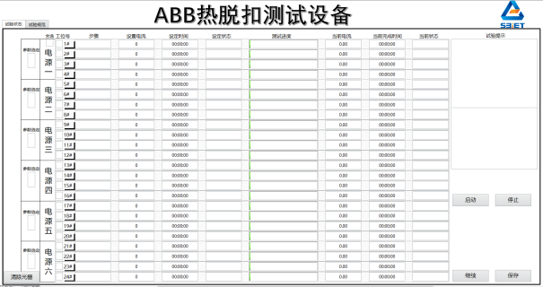
下面软件是电寿命试验通过接入不同的电阻来控制不同电流大小，在左侧显示试验信息，在右侧显示波形曲线。

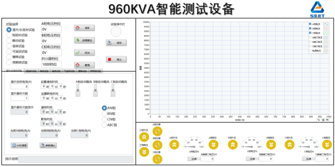
下面软件是断路器在220V电压下点寿面试验软件。
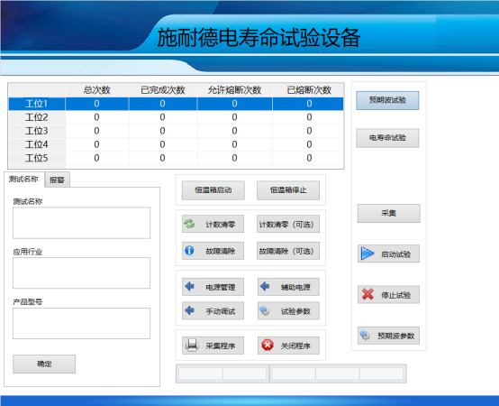
下面软件是接触器可靠性试验，通过给线圈频繁供电，来判断主触点和辅助触点的接通情况是否符合要求。
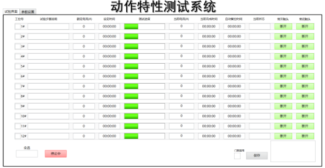
下面软件是交直流接触器动作特性测试可以分别测试交流接触器和直流接触器。
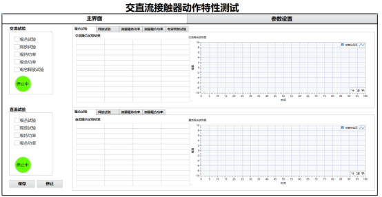
下面软件是用于温升试验历史数据产看界面。
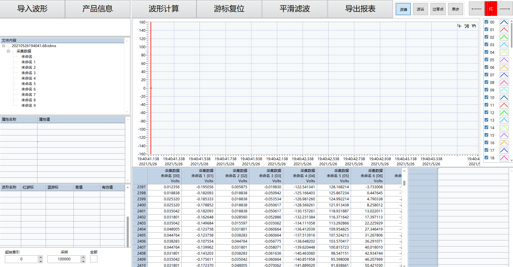
下面软件是高压固态断路器试验，通过采集的波形来判断产品是否合格，由于电压很高最高达到 4500V，因此波形时间很短并且有杂波需要拟合之后再分析。
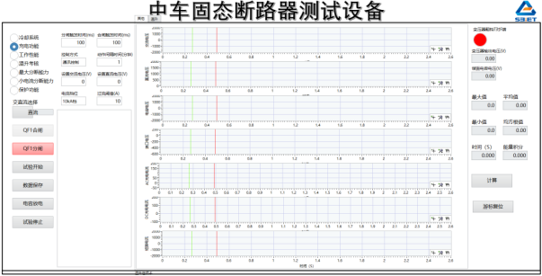
下面软件是老化试验测试，因此需要软件连续不间断运行7天才可以测试完成。
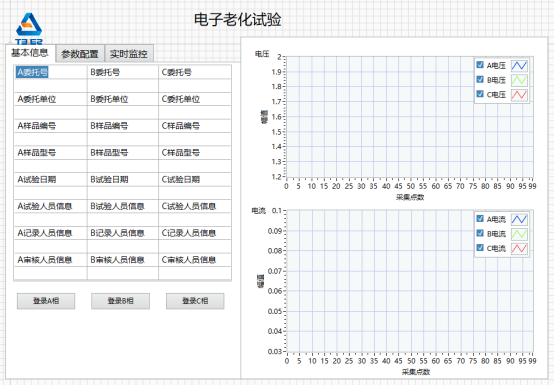
下面软件是接触器完整的测试，可以测试主触头、辅助触头的接触电阻，以及线圈电阻、线圈通电波形、 合分闸时间，还有可靠性试验检测。
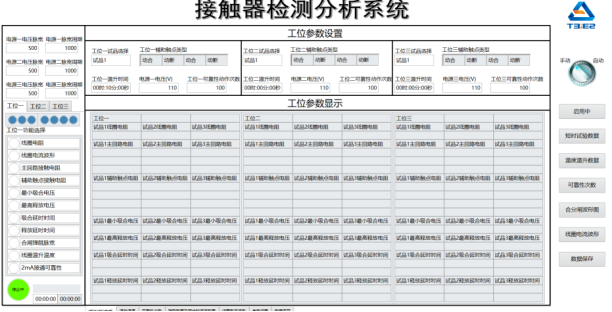
下面软件也是可靠性试验检测，但是是在温湿度箱中进行，测试在不同湿度、温度下产品性能。
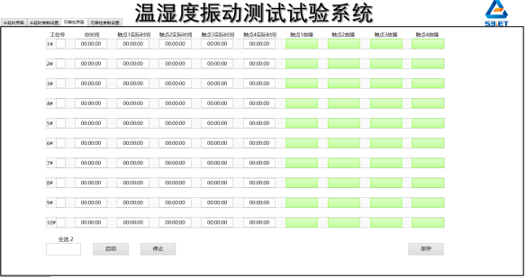
下面软件是24工位延时试验检测，其中是六个大工位，大工位之间相互独立互不干扰。
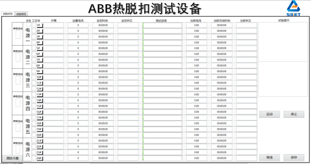
下面软件是电寿命试验通过接入不同的电阻来控制不同电流大小，在左侧显示试验信息，在右侧显示波形曲线。